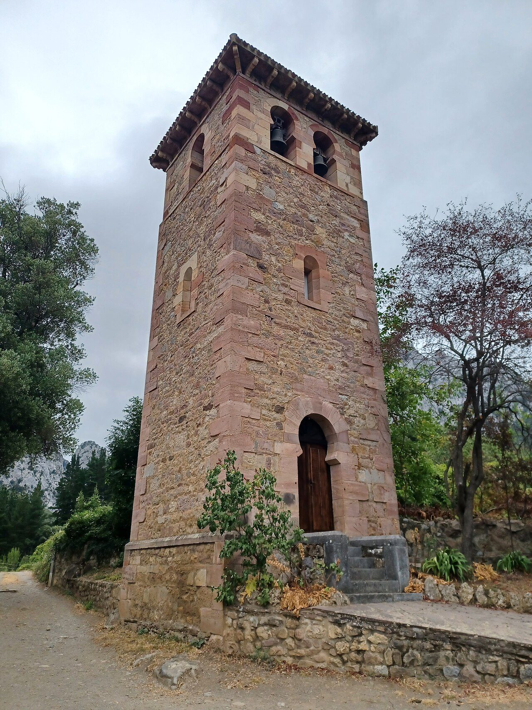

El arte prerrománico
Criterios: PC 5.1, PC 5.2
🤔 Pienso5 min
Qué hago aquí: Piensa un momento y contesta con lo que ya sabes. No pasa nada si no lo sabes: es para empezar.
Si una iglesia tiene más de mil años, ¿cómo crees que ha podido llegar en pie hasta hoy?
📖 Leo y aprendo15 min
Qué hago aquí: Lee despacio, mira los dibujos y los ejemplos, y quédate con la idea clave del final.
Tras la caída del Imperio romano y la llegada de los musulmanes a la península (711), las tierras de Cantabria quedaron dentro del reino de Asturias. Llegaron monjes y familias huidas del sur, se fundaron monasterios y se construyeron pequeñas iglesias. Su arte, anterior al románico, se llama prerrománico.

Foto: Simon Burchell · CC BY-SA 4.0 · Iglesia de Santa María de Lebeña 02.jpg
✏️ Hago25 min
Qué hago aquí: Haz las actividades en orden. Empieza siempre por las básicas.
Explica el contexto histórico del prerrománico en Cantabria: qué pasó en el 711, en qué reino quedó Cantabria y quiénes llegaron del sur.
Explica qué significa que Lebeña sea mozárabe y nombra tres rasgos que permiten reconocerla.
Dibuja un arco de medio punto y uno de herradura. Explica la diferencia geométrica entre los dos.
✏️ Puedes responder escribiendo, con un dibujo o un esquema, o contándolo en voz alta.
¿Por qué se excavaron iglesias en la roca en Valderredible? Relaciona el tipo de roca con la forma de vida de los eremitas.
Lebeña está junto al desfiladero de La Hermida, en un valle muy cerrado. Explica qué ventajas tenía ese lugar para una comunidad cristiana del siglo x.
Lebeña es Monumento Nacional desde 1893. Explica qué supone esa protección y qué riesgos tiene una iglesia de más de mil años (humedad, tráfico, abandono, turismo).
La tradición del tejo y el olivo es una leyenda que explica la historia. ¿Qué parte puede ser verdad y qué parte es simbólica? ¿Cómo podría comprobarse?
🚀 Amplío (si quieres saber más)
Qué hago aquí: ¿Has terminado? Lee la curiosidad o elige el reto. Es voluntario.
Investiga una iglesia rupestre de Valderredible (Santa María de Valverde, San Martín de Villarén o Arroyuelos): cómo se excavó, qué partes tiene, de qué época es y en qué estado está. Haz un plano sencillo y explica por qué es difícil de conservar.
✅ Compruebo5 min
Qué hago aquí: Contesta sin mirar la ficha y marca cómo lo llevas.